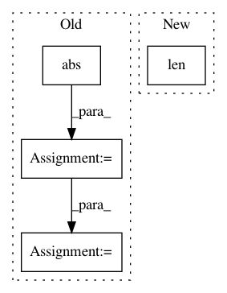

d7df3585734f7d0326d5f854d8f16fe3b3d06373,mir_eval/boundary.py,,detection,#,49
Before Change
n_ref, n_est = len(reference_boundaries), len(estimated_boundaries)
window_match = np.abs(np.subtract.outer(reference_boundaries, estimated_boundaries)) <= window
window_match = window_match.astype(int)
// L. Lovasz On determinants, matchings and random algorithms.
// In L. Budach, editor, Fundamentals of Computation Theory, pages 565-574. Akademie-Verlag, 1979.
//
// If we build the skew-symmetric adjacency matrix
// D[i, n_ref+j] = 1 <=> ref[i] within window of est[j]
// D[n_ref + j, i] = -1 <=> same
//
// then rank(D) = 2 * maximum matching
//
// This way, we find the optimal assignment of reference and annotation boundaries.
//
skew_adjacency = np.zeros((n_ref + n_est, n_ref + n_est), dtype=np.int32)
skew_adjacency[:n_ref, n_ref:] = window_match
skew_adjacency[n_ref:, :n_ref] = -window_match.T
matching_size = np.linalg.matrix_rank(skew_adjacency) / 2.0
precision = matching_size / len(estimated_boundaries)
After Change
estimated_boundaries,
window)
precision = float(len(matching)) / len(estimated_boundaries)
recall = float(len(matching)) / len(reference_boundaries)
f_measure = util.f_measure(precision, recall, beta=beta)
In pattern: SUPERPATTERN
Frequency: 3
Non-data size: 4
Instances
Project Name: craffel/mir_eval
Commit Name: d7df3585734f7d0326d5f854d8f16fe3b3d06373
Time: 2014-04-18
Author: brm2132@columbia.edu
File Name: mir_eval/boundary.py
Class Name:
Method Name: detection
Project Name: scikit-learn-contrib/imbalanced-learn
Commit Name: aa6af82f458acf3f853e5174d34b11d319eea1c0
Time: 2016-06-17
Author: victor.dvro@gmail.com
File Name: unbalanced_dataset/under_sampling/instance_hardness_threshold.py
Class Name: InstanceHardnessThreshold
Method Name: transform
Project Name: tiberiu44/TTS-Cube
Commit Name: 9cf2bcdb24f23a17ec11e69b8885851771dfd3d8
Time: 2018-10-25
Author: boros@adobe.com
File Name: cube/models/vocoder.py
Class Name: BeeCoder
Method Name: learn